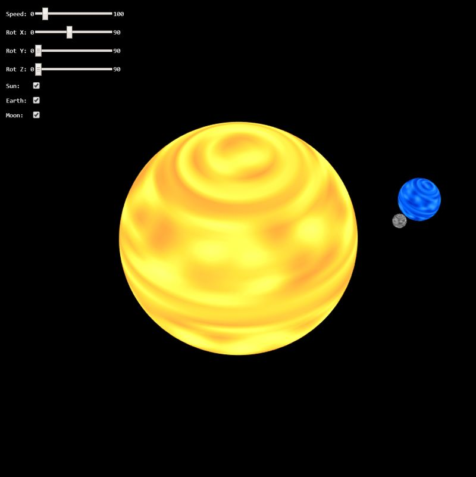

New Jersey Institute of Technology: CS 438 002
Interactive Computer Graphics Spring 2020
Assignment 2
Author: Marku, Baudin, 31460156
Date: 2/14/2020
Due: 2/27/2020
Go to Assignemt Home | Task 1-3
Task 1 (8 points)
Implement a model matrix for the Earth model using a concatination of canonical transformations and set it as the u_model uniform variable in the shader.
The Earth should
- be scaled accordingly
- rotate around its axis
- be tilted by -23.44 degrees with respect to (wrt) its orbit axis
- orbit around the sun.
Don't forget that the Earth's tilt angle is constant in the x-y-plane!
Be aware of the proper order of the transformations!
Additionally, set its u_color uniform variable accordingly for set the planets color.
Task 2 (8 points)
Implement a model matrix for the Moon model using a concatination of canonical transformations and set it as the u_model uniform variable in the shader.
The Moon should
- be scaled accordingly
- rotate around the Earth
- be tilted by -5.14 degrees with respect to (wrt) its orbit axis around the Earth in the x-y-plane
- orbit around the Earth
- orbit with the Earth around the Sun.
Be aware of the proper order of the transformations! Additionally, set its u_color uniform variable accordingly.
Task 3 (4 points)
Use the uniform vec3 u_color to combine it with the provided attribute vec3 a_color in order to create shading for the planet. Be creative! There is no "right" way to create this color, so invent it in order to obtain a color for planets which satisfies you.
The attribute vec3 a_color contains noise values sampled from Perlin Noise distribution. The noise is given in the range between [0..1] and is the same in all three channels of a_color.
Remark: if you are interested how the sphere is created and the noise is sampled, check the function sphereGeometry(...).
Results
Your result should look similar like on the image below:
WebGL Canvas
Documentation
For task 1, I first began by rotating the Earth with respect to the Sun on the Y-axis at the speed of a year because it takes a year for the Earth to orbit the sun. I then gave it its tilt angle by rotating it about the X-axis by -23.44 degrees with respect to its own orbit. I then translated the Earth 0.75 on the X-axis to shift it outside of the Sun. I then rotated the Earth with respect to itself on the Y-axis at the speed of a day because it takes one day for the Earth to rotate about itself. Finally, I scaled the Earth down to fit the size similar to the solution provided above.
For task 2, I first began by rotating the Moon with respect to the Sun on the Y-axis at the speed of a year to follow the Earth's orbit of the Sun. I then translated the Moon to be at the exact location of the Earth in order to rotate it again with respect to the Earth on the Y-axis this time at the speed of a month because it takes roughly a month for the Moon to orbit the Earth. I then gave the Moon its tilt angle of -5.14 degrees by rotating it on the X-axis. I then translated the Moon outside of the Earth's position by 0.15 in the X direction. I then added a final rotation with respect to itself on the Y-axis with the speed of a month because the Moon takes roughly a month to rotate about itself. Finally, I scaled the size of the moon down even smaller than that of the Earth to fit the size similar to the solution provided above.
For task 3, I used the uniform vec3 u_color and combined it with the attribute vec3 a_color in order to create shading for the planet. By combining the u_color and a_color as shown in the slides 08 on canvas, and messing with the hsvToRgb() values in the different spheres, I was able to get colors similar to the solution provided above.
Happy Coding !
Instructor: Assoc. Prof. Dr. Przemyslaw Musialski
Email: przemyslaw.musialski@njit.edu